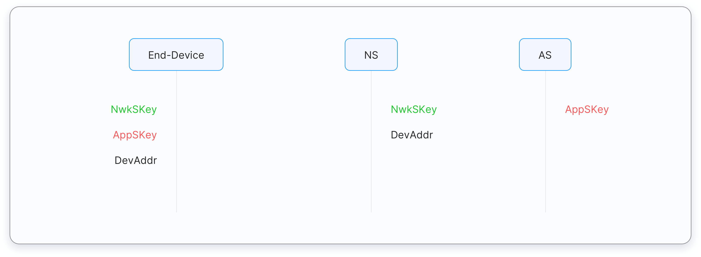
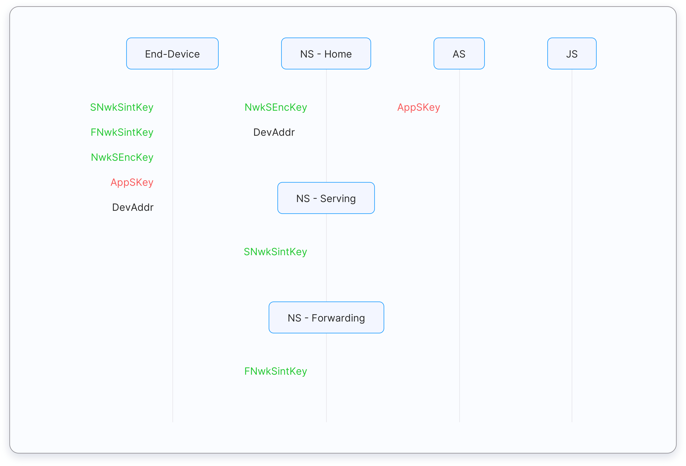

Every end device must be registered with a network before sending and receiving messages. This procedure is known as activation. There are two activation methods available:
- Over-The-Air-Activation (OTAA) - the most secure activation method for end devices. Devices perform a join procedure with the network, during which a dynamic device address is assigned and security keys are negotiated with the device.
- Activation By Personalization (ABP) - requires hardcoding the device address as well as the security keys in the device. ABP is less secure than OTAA and also has the downside that devices can not switch network providers without manually changing keys in the device.
The join procedure for LoRaWAN 1.0.x and 1.1 is slightly different. The following two sections describe the join procedure for LoRaWAN 1.0.x and 1.1 separately.
Over The Air Activation in LoRaWAN 1.0.x #
In LoRaWAN 1.0.x, the join procedure involves two MAC messages exchanged between the end device and the network server:
- Join-request
- Join-accept
Before Activation #
Before activation, the AppEUI, DevEUI, and AppKey should be stored in the end device. The AppKey is an AES-128 bit secret key known as the root key. The same AppKey should be provisioned onto the network where the end device is going to register. The AppEUI and DevEUI are not secret and are visible to everyone.
Note:
The AppKey is never sent over the network.OTAA Message Flow #
The steps below describe the message flow of the Over-The-Air-Activation (OTAA).

Figure: Message flow for Over-The-Air-Activation (OTAA) in LoRaWAN 1.0
Step 1 #
The Join-request message is always sent by the end device. The Join-request message consists of the following three fields.
- DevEUI – 64-bit globally unique end-device identifier in IEEE EUI64 address space.
- AppEUI – 64-bit globally unique identifier in IEEE EUI64 address space that uniquely identifies the entity able to process the Join-request frame. This is also known as the application identifier.
- DevNonce – this is a unique, random, 2-byte value generated by the end device. The network server uses the DevNonce to keep track of each end-device. The DevNonce value is used to prevent replay attacks. If the end device sends a Join-request with a previously used DevNonce, the network server rejects the Join-request and does not allow the end device to register with the network.
The structure of the Join-request message is shown below. The Message Integrity Code (MIC) is calculated using all the fields of the Join-request message and the AppKey to ensure integrity of the message, and then added to the end:
| 8 bytes | 8 bytes | 2 bytes | 4 bytes |
| AppEUI | DevEUI | DevNonce | MIC |
Note:
- The AppKey is not sent with the Join-request message. It is used to calculate the MIC only.
- The Join-request message is not encrypted.
The Join-request message can be transmitted using any data rate and using one of the specified join channels. These join channels are region-specific. For example, in Europe an end device can transmit the join-request message by randomly choosing among 868.10 MHz, 868.30 MHz, or 868.50 MHz. The Join-request message travels through one or more gateways that simply relay the message back to the network server.
Note:
No response is given to the end-device if the Join-request is not accepted.Step 2 #
Now the Join-request message has been received by the Network Server. If the end device is permitted to join with the network the network server will respond to the end device message with the Join-accept message.
The Join-accept message consists of the following fields.
- AppNonce – this is a random value or some form of unique ID provided by the network server. The AppNonce is used by the end device to derive the two session keys, AppSKey and NwkSKey.
- NetID – consists of the network ID (the 7 least significant bits) and the remaining 17 most significant bits are chosen by the network operator.
- DevAddr – this is the 32-bit device address assigned by the network server. Consists of NwkID and NwkAddress. The device address is unique within the current network.
- DLSettings – this is a 1-byte sized field consisting of downlink settings which the end device should use.
- RxDelay – the delay between TX and RX
- CFList – contains the optional list of channel frequencies to be used for the end device
The following figure shows the Join-accept message with all the above-generated values. The MIC is calculated using the AppKey and added to the frame.
| 3 bytes | 3 bytes | 4 bytes | 1 bytes | 1 bytes | 16 bytes | 4 bytes |
| AppNonce | NetID | DevAddr | DLSettings | RXDelay | CFList | MIC |
The Join-accept message itself is then encrypted with the AppKey.
Step 3 #
The Network Server sends the encrypted Join-accept message back to the end device. The Join-accept message is sent as a normal downlink.
Step 4 #
The Network Server sends the AppSKey to the Application Server.
Step 5 #
The end device uses the AppKey to derive the two session keys: the Network Session Key (NwkSKey) and the Application Session Key (AppSKey).
After Activation #
After activation, the following additional information is stored in the end device.
- DevAddr - The DevAddr is allocated by the Network Server of the end-device. It is a 32-bit device address that identifies the end-device within the current network.
- NwkSKey - The NwkSKey is used by the end device and network server to calculate and verify the Message Integrity Code (MIC) of all data messages to ensure data integrity. The NwkSKey is also used to encrypt and decrypt payloads with MAC commands.
- AppSKey - The AppSKey is used to secure end-to-end communications between the end device and the application server by encrypting payloads with application-specific data.
Over-The-Air-Activation in LoRaWAN 1.1 #
In LoRaWAN 1.1, the join procedure involves two MAC messages exchanged between the end device and the Join Server:
- Join-request
- Join-accept
Before Activation #
Before activation, the JoinEUI, DevEUI, AppKey, and NwkKey should be stored in the end device. The AppKey and NwkKey are AES-128 bit secret keys known as root keys. The matching AppKey, NwkKey, and DevEUI should be provisioned onto the Join Server that will assist in the processing of the join procedure and session key derivation. The JoinEUI and DevEUI are not secret and visible to everyone.
Note:
The AppKey and NwkKey are never sent over the network.OTAA Message Flow:
The steps below describe the message flow of the Over-The-Air-Activation (OTAA).

Figure: Message flow for Over-The-Air-Activation (OTAA) in LoRaWAN 1.1
Step 1 #
The Join-request message is transmitted by the end device. It consists of the following three fields:
- DevEUI – 64-bit global end-device ID in IEEE EUI64 address space that uniquely identifies the end-device.
- JoinEUI – 64-bit global application ID in IEEE EUI64 address space that uniquely identifies the Join Server that can assist in the processing of the Join procedure and session keys derivation.
- DevNonce – this is a 2-byte counter, starting at 0 when the device is initially powered up and incremented with every Join-request. The DevNonce value is used to prevent replay attacks.
Note:
- Learning about replay attacks is beyond the scope of The Things Fundamentals certification.
- In LoRaWAN 1.1 AppEUI is replaced with the JoinEUI.
- The procedure for joining a LoRaWAN 1.0 end device with the LoRaWAN 1.1 network is also beyond the scope of The Things Fundamentals certification.
- Rejoin-request messages will be covered in The Things Advanced certification.
The structure of the Join-request message is shown in the following figure. The MIC is calculated using the NwkKey. The calculated MIC is added to the end of the Join-request message. The resulting frame is known as the PHYPayload:
| 1 byte | 8 bytes | 8 bytes | 2 bytes | 4 bytes |
| MHDR | JoinEUI | DevEUI | DevNonce | MIC |
Note:
- The NwkKey is not sent with the Join-request message. It is used to calculate the MIC only.
- The Join-request message is not encrypted and sent as plain text.
Finally, the end-device transmits the Join-request message. The Join-request message can be transmitted using any data rate and using one of the specified join channels. These join channels are region-specific, for example, in Europe an end device can transmit the join-request message by randomly choosing among 868.10 MHz, 868.30 MHz, or 868.50 MHz. The Join-request message travels through one or more gateways that simply relay the message back to the network server.
Note:
No response is given to the end-device if the Join-request is not accepted.Step 2 #
The Network Server uses DNS to look up the IP address of the Join Server based on the JoinEUI in the received Join-request message.
Step 3 #
If DNS lookup succeeds, the Network Server sends a JoinReq message (backend message) to the Join Server. This message contains the following:
- PHYPayload of the join-request message
- MAC version
- DevEUI
- DevAddr
- DLSettings
- RxDelay
- CFList
Step 4 #
The Join Server processes the Join-request message and sends the JoinAns message (this is also a backend message) to the Network Server. If successful the JoinAns message contains the following:
- PHYPayload with Join-accept message
- Network session keys
- Serving Network session integrity key (SNwkSIntKey)
- Forwarding Network session integrity key (FNwkSIntKey)
- Network session encryption key (NwkSEncKey)
- Encrypted AppSKey (network server can’t read this)
The Network Server prepares the Join-accept message based on the above information.
| 1 byte | 3 bytes | 4 bytes | 1 bytes | 1 bytes | 16 bytes |
| JoinNonce | NetID | DevAddr | DLSettings | RXDelay | CFList |
The Join-accept message is encrypted with the NwkKey.
Step 5 #
The Network Server forwards the received PHYPayload with the Join-accept message to the end-device if the received JoinAns message indicates success. The Join-accept message is sent as a normal downlink.
The end-device calculates the MIC, and generates the network session keys and AppSKey.
The FNwkSIntKey, SNwkSIntKey, and NwkSEncKey are derived from the NwkKey.
Step 6 #
When the Network receives an uplink packet from the end-device, the Network Server will send the DevEUI and encrypted AppSKey along with the application payload to the Application Server.
Step 7 #
When the Application Server receives the encrypted AppSKey along with the application payload, it will decrypt the AppSKey using a secret key shared between the Join Server and the Application Server, and use the AppSKey to decrypt the received payload. If the encrypted AppSKey is not made available by the Network Server, then the Application Server will proceed to Step 8.
Step 8 #
In this alternative step, the Application Server requests the AppSKey directly from the Join Server. The Application Server will request the AppSKey identified by the DevEUI of the end device from the Join Server by sending an AppSKeyReq message (backend message). The AppSKey is encrypted using a shared secret between the Join Server and the Application Server. The Join Server sends the encrypted AppSKey, and DevEUI to the Application Server in an AppSKeyAns message (backend message). The Application Server decrypts the encrypted AppSKey, then uses the AppSKey to encrypt and decrypt the application payload.
After Activation #
After activation, the following additional information is stored in the end device.
- DevAddr - The DevAddr is allocated by the Network Server of the end-device. It is a 32-bit device address that identifies the end-device within the current network.
- FNwkSIntKey - This is a network session key that is used by the end device to calculate the MIC or part of the MIC of all uplink data messages to ensure data integrity.
- SNwkSIntKey - This is a network session key specific to the end device. It is used by the end device to verify the MIC of all downlink data messages to ensure data integrity and to compute half of the uplink messages MIC.
- NwkSEncKey - This is a network session key specific to the end device. It is used to encrypt and decrypt uplink and downlink MAC commands transmitted as payload on port 0 or in the FOpt field.
- AppSKey - This is an application-specific session key used by both the application server and the end device to encrypt and decrypt the payload field of application specific data messages.
Activation By Personalization #
Activation By Personalization (ABP) directly ties an end-device to a pre-selected network, bypassing the join procedure. Activation by Personalization is the less secure activation method, and also has the downside that devices can not switch network providers without manually changing keys in the device. A join server is not involved in the ABP process.
An end device activated using the ABP method can only work with a single network and keeps the same security session for its entire lifetime.
Activation By Personalisation in LoRaWAN 1.0.x #
In LoRaWAN 1.0.x, the DevAddr and the two session keys NwkSKey and AppSKey are directly stored into the end-device instead of the DevEUI, AppEUI, and the AppKey. The same DevAddr should be stored in the Network Server. Each end device should have a unique set of NwkSKey and AppSkey. The same NwkSKey and AppSKey should be stored in the Network Server and the Application Server, respectively (see the figure below).

Figure: Pre-sharing DevAddr and session keys for ABP in LoRaWAN 1.0
Activation By Personalisation in LoRaWAN 1.1 #
In LoRaWAN 1.1, the DevAddr and the four-session keys FNwkSIntKey, SNwkSIntKey, NwkSEncKey, and AppSKey are directly stored into the end device instead of the DevEUI, JoinEUI, AppKey, and NwkKey. The same FNwkSIntKey, SNwkSIntKey, and NwkSEncKey should be stored in the Network Server and the and AppSKey should be stored in the Application Server. The same DevAddr should be stored in the Network Server.

Figure: Pre-sharing DevAddr and session keys for ABP in LoRaWAN 1.1
Questions #
-
What is not a secure activation method?
- Over The Air Activation (OTAA)
- Activation By Personalization (ABP)
-
What is the most secure activation method?
- Over The Air Activation (OTAA)
- Activation By Personalization (ABP)
-
What security keys should be stored in an end-device for ABP in LoRaWAN 1.1?
- FNwkSIntKey, SNwkSIntKey, NwkSEncKey, AppSKey
- NwkSKey, AppSKey
- JSIntKey, JSEncKey
-
What security keys should be stored in an end-device for ABP in LoRaWAN 1.0.x?
- FNwkSIntKey, SNwkSIntKey, NwkSEncKey, AppSKey
- NwkSKey, AppSKey
- JSIntKey, JSEncKey